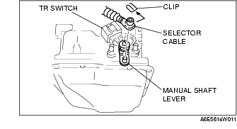
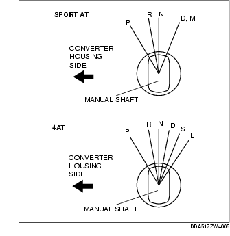
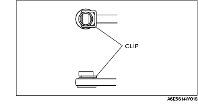

Transaxle range (TR) switch adjustment [FN4A-EL]
1. Disconnect the negative battery cable.
2. Remove the fresh-air duct. (See INTAKE-AIR SYSTEM REMOVAL/INSTALLATION [ZY].)
- • Water or foreign objects entering the connector can cause a poor connection or corrosion. Be sure not to drop water or foreign objects on the connector when disconnecting it.
3. Remove the clip and disconnect the selector cable.

4. Rotate the manual shaft to the converter housing side fully, then return 2 notches to set the N position.

5. Disconnect the TR switch connector.

6. Loosen the TR switch mounting bolts.

7. Measure the resistance between terminals B and C.

8. Adjust the switch to the point as follows.
Resistance9. Tighten the TR switch mounting bolts.
Tightening torque10. Move the selector lever to N position.
11. Verify that the TR switch is aligned with N position.
12. Connect the TR switch connector.
13. Install the clip to the selector cable as shown in the figure.

14. Connect the selector cable to the manual shaft lever as shown in the figure.

15. Inspect operation of the TR switch. (See TRANSAXLE RANGE (TR) SWITCH INSPECTION [FN4A-EL].)
16. Install the fresh-air duct. (See INTAKE-AIR SYSTEM REMOVAL/INSTALLATION [ZY].)
17. Connect the negative battery cable.